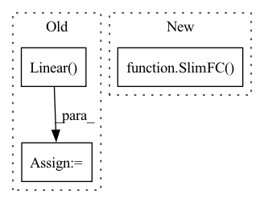

Pattern ID :1156

Before Change
// action branch and value branch
self.action_branch = nn.Linear(self.hidden_state_size, num_outputs)
self.value_branch = nn.Linear(self.input_dim, 1)
// Holds the current "base" output (before logits layer).
self._features = None
After Change
out_size=num_outputs,
initializer=normc_initializer(0.01),
activation_fn=None)
self.vf_branch = SlimFC(
in_size=input_dim,
out_size=1,
initializer=normc_initializer(0.01),
activation_fn=None)
// Holds the current "base" output (before logits layer).
self._features = None
In pattern: SUPERPATTERN
Frequency: 3
Non-data size: 3
Instances
Fragment ID: 5854841
Project Name: replicable-marl/marllib
Commit Name: ad9e882a616f22e8a142a6247723317e04279f18
Time: 2023-02-24
Author: hhhusiyi@163.com
File Name: marllib/marl/models/zoo/rnn/base_rnn.py
M Class Name: Base_RNN
N Class Name: Base_RNN
M Method Name: __init__(6)
N Method Name: __init__(6)
M Parent Class: TorchRNN,nn.Module
N Parent Class: TorchRNN,nn.Module
M File Name: marllib/marl/models/zoo/rnn/base_rnn.py
N File Name: marllib/marl/models/zoo/rnn/base_rnn.py
M Start Line: 37
M End Line: 107
N Start Line: 40
N End Line: 113
'>
Before Change
input_dim = self.obs_size
for i in range(self.custom_config["model_arch_args"]["fc_layer"]):
out_dim = self.custom_config["model_arch_args"]["out_dim_fc_{}".format(i)]
fc_layer = nn.Linear(input_dim, out_dim)
layers.append(fc_layer)
input_dim = out_dim
elif "conv_layer" in self.custom_config["model_arch_args"]:
self.obs_size = self.full_obs_space["obs"].shape
After Change
input_dim = self.obs_size
for out_dim in self.encoder_layer_dim:
layers.append(
SlimFC(in_size=input_dim,
out_size=out_dim,
initializer=normc_initializer(1.0),
activation_fn=self.activation))
input_dim = out_dim
elif "conv_layer" in self.custom_config["model_arch_args"]:
self.obs_size = self.full_obs_space["obs"].shape
'>
Fragment ID: 5854840
Project Name: replicable-marl/marllib
Commit Name: 229bfd1c9db33d2ff0761dbdbe21e47a47a9b87c
Time: 2023-02-23
Author: hhhusiyi@163.com
File Name: marllib/marl/models/zoo/rnn/base_rnn.py
M Class Name: Base_RNN
N Class Name: Base_RNN
M Method Name: __init__(6)
N Method Name: __init__(6)
M Parent Class: TorchRNN,nn.Module
N Parent Class: TorchRNN,nn.Module
M File Name: marllib/marl/models/zoo/rnn/base_rnn.py
N File Name: marllib/marl/models/zoo/rnn/base_rnn.py
M Start Line: 39
M End Line: 86
N Start Line: 34
N End Line: 105
'>
Before Change
self.q_flag = False
if self.custom_config["algorithm"] in ["coma"]:
self.q_flag = True
self.value_branch = nn.Linear(self.input_dim, num_outputs)
self.central_vf = nn.Sequential(
nn.Linear(cc_input_dim, num_outputs),
)
After Change
// out_size=num_outputs,
// initializer=normc_initializer(0.01),
// activation_fn=None)
self.cc_value_branch = SlimFC(
in_size=cc_input_dim,
out_size=num_outputs,
initializer=normc_initializer(0.01),
activation_fn=None)
def central_value_function(self, state, opponent_actions=None) -> TensorType:
assert self._features is not None, "must call forward() first"
B = state.shape[0]
'>
Fragment ID: 5854843
Project Name: replicable-marl/marllib
Commit Name: d1102d1ff2913e6539f1f19e5a7bd9b639d08f08
Time: 2023-02-21
Author: hhhusiyi@163.com
File Name: marllib/marl/models/zoo/mlp/cc_mlp.py
M Class Name: CC_MLP
N Class Name: CC_MLP
M Method Name: __init__(6)
N Method Name: __init__(6)
M Parent Class: Base_MLP
N Parent Class: Base_MLP
M File Name: marllib/marl/models/zoo/mlp/cc_mlp.py
N File Name: marllib/marl/models/zoo/mlp/cc_mlp.py
M Start Line: 79
M End Line: 82
N Start Line: 84
N End Line: 88